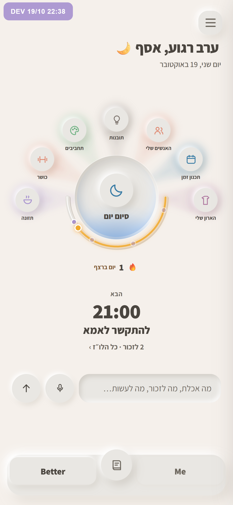
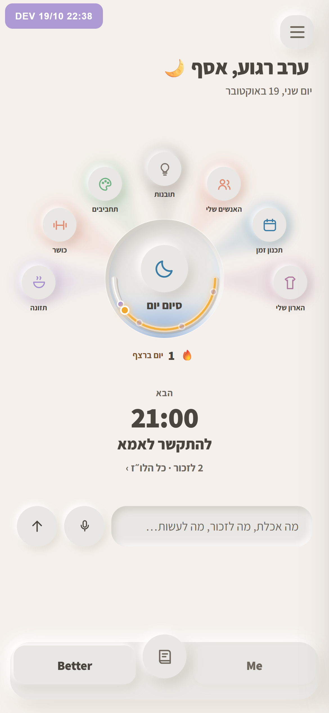
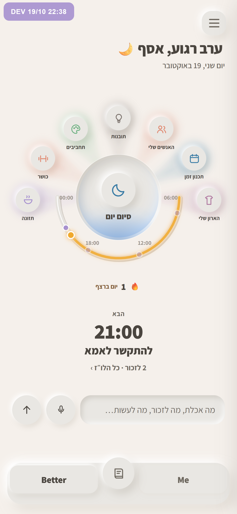
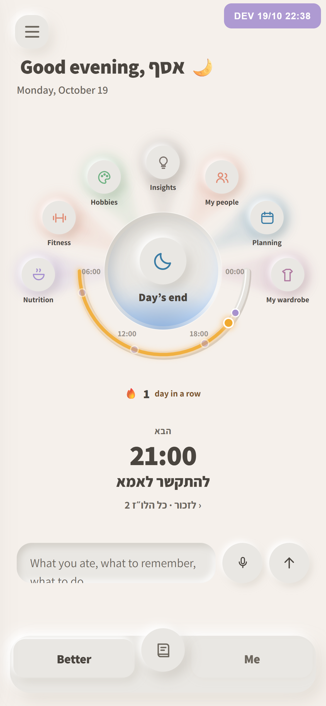

הבאר שמתמלאת באור, והשעון בחצי התחתון
בכל שלוש הווריאציות "סיום יום" הוא באר שהאור הכחול עולה בה מלמטה, בלי הטקסט באמצע. שעון היום עבר לחצי התחתון של העיגול, כך שהקרניים של החלקים למעלה נשארות שלמות. הוא מתחיל ב־06:00 בצד שממנו קוראים, ונגמר בחצות בצד השני. כרטיס "היום" הוחלף בדבר הבא, בגדול. ב־dev לא שיניתי כלום.

קשת שמחבקת את הבאר
חריץ דק צמוד לתחתית העיגול, בדיוק מתחת לאור שעולה בבאר. הרצף יושב מתחת לקשת.
הכי שקט מבין השלוש. הנקודות של הלו״ז קטנות.

היום חרוט בשפה של הבאר
השעון הוא חריץ בתוך העיגול עצמו, בשפה התחתונה שלו, איפה שהאור מתמלא. מבחוץ המסך נשאר הכי נקי, והסיכום והיום הופכים לחפץ אחד.
צפוף: אור כחול ופס ענבר באותו מקום, והנקודות הכי קטנות.

קשת רחבה עם שעות
הקשת רחוקה יותר מהבאר ורחבה כמעט כמו המניפה, עם השעות 06, 12, 18 ו־00 מסומנות בתוכה. הכי קל לקרוא ממנה מה השעה ביום.
הקצוות שלה מתקרבים לתזונה ולארון. המספרים הם עוד טקסט קטן במסך.

בדיקת כיוון
בשפות שנקראות משמאל לימין השעון מתחיל משמאל. המילים "הבא" ו"לזכור" עדיין בעברית, כי זו רק הדמיה. בבנייה הן יתורגמו לכל השפות.
כדי לבחור, כתוב לי א, ב או ג.